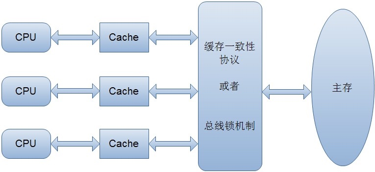

volatile 变量是一种非常简单但同时又非常脆弱的同步机制，它在某些情况下将提供优于锁的性能和伸缩性。
内存模型的相关概念
计算机的没一条指令都是在CPU中执行的，执行指令的过程中会涉及到数据的读取和写入。由于程序运行过程中的临时数据是放在主存（物理内存）中的，但是由于CPU的执行速度很快，而从内存读取数据和向内存写入数据的过程相对慢很多，因此任何时候对数据的操作会由于要和内存进行交互而拖慢了指令的执行速度。因此CPU里面就有了高速缓存。
高速缓存
程序运行过程中，会将运算需要的数据从主存中复制一份到CPU的告诉缓存中，那么CPU进行计算时就可以直接从它的高速缓存中读取和写入数据，当运算结束时，再将高速缓存中的数据刷新到主存当中。
但是，由于每个CPU都有自己的高速缓存，当一个变量存在多个CPU的高速缓存中（即多个线程访问共享变量），就可能出现缓存不一致的情况。
所以就出现了缓存一致性协议。
缓存一致性协议
核心思想：当CPU写数据时，如果发现操作的变量是共享变量，即在其他CPU中也存在该变量的副本，会发信号通知其他CPU将该变量的缓存行置为无效的状态，因此当其他CPU需要读取这个变量时，发现自己缓存中该变量的缓存行是无效的，那么他就会从内存中重新读取。

并发编程中的三个概念
原子性
即一个操作或者多个操作 要么全部执行并且执行的过程不会被任何因素打断，要么就都不执行。可见性
可见性是指当多个线程访问同一个变量时，一个线程修改了这个变量的值，其他线程能够立即看得到修改的值。有序性
程序执行的顺序按照代码的先后顺序执行。
因为处理器为了提高程序的运行效率，可能会对代码进行优化，即指令重排序。它不保证程序中的各个语句的执行顺序同代码一致，但是它会保证程序的最终执行结果和代码顺序执行结果是一致的。
Java内存模型
在Java虚拟机规范中试图定义一种Java内存模型来屏蔽各个硬件平台和操作系统的内存访问差异，以实现让Java程序在各种平台都达到一致的内存访问效果。
Java内存模型规定了程序中变量的访问规则，往大了说也就是程序执行的次序。为了获得较好的执行性能，Java内存模型并没有限制执行引擎使用处理器的寄存器或者高速缓存来提升执行速度，也就没有限制编译器对指令进行重排序。因此，在Java内存模型中也存在缓存一致性和指令重排序的问题。
Java内存模型规定所有的变量都存在与主存当中（类似前面说的物理内存），每个线程有自己的工作内存（类似前面说的高速缓存），线程对变量的所有操作都必须在工作内存中进行，而不能直接对主存进行操作。并且每个线程不能访问其他线程的工作内存。
例：在java中，执行下面这个语句：
i = 10
执行线程必须现在自己的工作内存中对变量i所在的缓存行进行赋值操作，然后再写入主存中。而不是直接将数值10写入到主存当中。
那么Java语言本身对原子性，可见性以及有序性提供了那些保证呢？
原子性
对基本数据类型的变量的读取和赋值操作是原子性操作，即这些操作是不可被打断的，要么执行，要么不执行例：请分析下面那些操作是原子性操作
x = 10; //语句1 y = x; //语句2
x++; //语句3
x = x + 1; //语句4上面4个语句只有语句1的操作具备原子性。
也就是说, 只有简单的读取，赋值（而且必须是将数字赋值给某个变量，变量之间的相互赋值不是原子操作）才是原子操作。
注意：在32位平台下，对64位数据的读取和赋值是需要通过两个操作来完成的，不能保证其原子性。但是好像在最新的JDK中，JVM已经保证对64位数据的读取和赋值也是原子性操作了。
从上面可以看出，Java内存模型只保证了基本的读取和赋值是原子性操作，如果实现更大范围操作的原子性，可以通过synchronized和Lock来实现。由于synchronized和Lock能够保证任一时刻只有一个线程执行该代码块，那么自然就不存在原子性问题了，从而保证了原子性。
可见性
对于可见性，Java提供了volatile关键字来保证可见性。当一个共享变量被volatile修饰时，它会保证修改的值会立刻被更新到主存，当有其他线程需要读取时，它会从内存中读取新值。
而普通的共享变量不能保证可见性，因为普通共享变量被修改之后，什么时候写入主存是不确定的，当其他线程去读取时，此时内存中可能还是原来的旧值，因此无法保证可见性。
另外，通过synchronized和Lock也能够保证可见性，synchronized和Lock能保证同一时刻只有一个线程获取锁然后执行同步代码，并且释放锁之前会将对变量的修改刷新到主存中，因此保证了可见性。
有序性
在Java内存模型中，允许编译器和处理器对指令进行重排序，但是重排序过程不会影响到单线程程序的执行，却会影响到多线程并发执行的正确性。volatile关键字可以保证一定的有序性。另外通过synchronized和Lock来保证有序性，很显然，synchronized和Lock保证每个时刻只有一个线程执行同步代码，相当于是让线程顺序执行同步代码，自然保证了有序性。
深入剖析volatile关键字
volatile关键字的两层语义
一旦一个共享变量（类的成员变量、类的静态成员变量）被volatile修饰之后，那么就具备了两层语义：
保证了不同线程对变量操作时的可见性，即一个线程修改了某个变量的值，这新值对其他线程来说是立即可见的。
禁止进行指令重排序。
先看一段代码，假如线程1先执行，线程2后执行：
//线程1
boolean stop = false;
while(!stop){
doSomething();
}
//线程2
stop = true;
这段代码是很典型的一段代码，很多人在中断线程时可能都会采用这种标记办法。但是事实上，这段代码会完全运行正确么？即一定会将线程中断么？不一定，也许在大多数时候，这个代码能够把线程中断，但是也有可能会导致无法中断线程（虽然这个可能性很小，但是只要一旦发生这种情况就会造成死循环了）。
下面解释一下这段代码为何有可能导致无法中断线程。在前面已经解释过，每个线程在运行过程中都有自己的工作内存，那么线程1在运行的时候，会将stop变量的值拷贝一份放在自己的工作内存当中。
那么当线程2更改了stop变量的值之后，但是还没来得及写入主存当中，线程2转去做其他事情了，那么线程1由于不知道线程2对stop变量的更改，因此还会一直循环下去。
但是用volatile修饰之后就变得不一样了：
- 使用volatile关键字会强制将修改的值立即写入主存；
- 使用volatile关键字的话，当线程2进行修改时，会导致线程1的工作内存中缓存变量stop的缓存行无效（反映到硬件层的话，就是CPU的L1或者L2缓存中对应的缓存行无效；
- 由于线程1的工作内存中缓存变量stop的缓存行无效，所以线程1再次读取变量stop的值时会去主存读取。
那么在线程2修改stop值时（当然这里包括2个操作，修改线程2工作内存中的值，然后将修改后的值写入内存），会使得线程1的工作内存中缓存变量stop的缓存行无效，然后线程1读取时，发现自己的缓存行无效，它会等待缓存行对应的主存地址被更新之后，然后去对应的主存读取最新的值。
那么线程1读取到的就是最新的正确的值。
volatile保证原子性吗
下面看一个例子：
public class Test {
public volatile int inc = 0;
public void increase() {
inc++;
}
public static void main(String[] args) {
final Test test = new Test();
for(int i=0;i<10;i++){
new Thread(){
public void run() {
for(int j=0;j<1000;j++)
test.increase();
};
}.start();
}
while(Thread.activeCount()>1) //保证前面的线程都执行完
Thread.yield();
System.out.println(test.inc);
}
}
大家想一下这段程序的输出结果是多少？也许有些朋友认为是10000。但是事实上运行它会发现每次运行结果都不一致，都是一个小于10000的数字。
可能有的朋友就会有疑问，不对啊，上面是对变量inc进行自增操作，由于volatile保证了可见性，那么在每个线程中对inc自增完之后，在其他线程中都能看到修改后的值啊，所以有10个线程分别进行了1000次操作，那么最终inc的值应该是1000*10=10000。
这里面就有一个误区了，volatile关键字能保证可见性没有错，但是上面的程序错在没能保证原子性。可见性只能保证每次读取的是最新的值，但是volatile没办法保证对变量的操作的原子性。
在前面已经提到过，自增操作是不具备原子性的，它包括读取变量的原始值、进行加1操作、写入工作内存。那么就是说自增操作的三个子操作可能会分割开执行，就有可能导致下面这种情况出现：
假如某个时刻变量inc的值为10，
线程1对变量进行自增操作，线程1先读取了变量inc的原始值，然后线程1被阻塞了；
然后线程2对变量进行自增操作，线程2也去读取变量inc的原始值，由于线程1只是对变量inc进行读取操作，而没有对变量进行修改操作，所以不会导致线程2的工作内存中缓存变量inc的缓存行无效，所以线程2会直接去主存读取inc的值，发现inc的值时10，然后进行加1操作，并把11写入工作内存，最后写入主存。
然后线程1接着进行加1操作，由于已经读取了inc的值，注意此时在线程1的工作内存中inc的值仍然为10，所以线程1对inc进行加1操作后inc的值为11，然后将11写入工作内存，最后写入主存。
那么两个线程分别进行了一次自增操作后，inc只增加了1。
解释到这里，可能有朋友会有疑问，不对啊，前面不是保证一个变量在修改volatile变量时，会让缓存行无效吗？然后其他线程去读就会读到新的值，对，这个没错。这个就是上面的happens-before规则中的volatile变量规则，但是要注意，线程1对变量进行读取操作之后，被阻塞了的话，并没有对inc值进行修改。然后虽然volatile能保证线程2对变量inc的值读取是从内存中读取的，但是线程1没有进行修改，所以线程2根本就不会看到修改的值。
根源就在这里，自增操作不是原子性操作，而且volatile也无法保证对变量的任何操作都是原子性的。
把上面的代码改成以下任何一种都可以达到效果：
采用synchronized：
public class Test {
public int inc = 0;
public synchronized void increase() {
inc++;
}
public static void main(String[] args) {
final Test test = new Test();
for(int i=0;i<10;i++){
new Thread(){
public void run() {
for(int j=0;j<1000;j++)
test.increase();
};
}.start();
}
while(Thread.activeCount()>1) //保证前面的线程都执行完
Thread.yield();
System.out.println(test.inc);
}
}
采用Lock：
public class Test {
public int inc = 0;
Lock lock = new ReentrantLock();
public void increase() {
lock.lock();
try {
inc++;
} finally{
lock.unlock();
}
}
public static void main(String[] args) {
final Test test = new Test();
for(int i=0;i<10;i++){
new Thread(){
public void run() {
for(int j=0;j<1000;j++)
test.increase();
};
}.start();
}
while(Thread.activeCount()>1) //保证前面的线程都执行完
Thread.yield();
System.out.println(test.inc);
}
}
采用AtomicInteger：
public class Test {
public AtomicInteger inc = new AtomicInteger();
public void increase() {
inc.getAndIncrement();
}
public static void main(String[] args) {
final Test test = new Test();
for(int i=0;i<10;i++){
new Thread(){
public void run() {
for(int j=0;j<1000;j++)
test.increase();
};
}.start();
}
while(Thread.activeCount()>1) //保证前面的线程都执行完
Thread.yield();
System.out.println(test.inc);
}
}
在java 1.5的java.util.concurrent.atomic包下提供了一些原子操作类，即对基本数据类型的 自增（加1操作），自减（减1操作）、以及加法操作（加一个数），减法操作（减一个数）进行了封装，保证这些操作是原子性操作。atomic是利用CAS来实现原子性操作的（Compare And Swap），CAS实际上是利用处理器提供的CMPXCHG指令实现的，而处理器执行CMPXCHG指令是一个原子性操作。
volatile能保证有序性吗
在前面提到volatile关键字能禁止指令重排序，所以volatile能在一定程度上保证有序性
volatile关键字禁止指令重排序有两层意思：
当程序执行到volatile变量的读操作或者写操作时,在其前面的操作的更改肯定全部已经进行，且结果已经对后面的操作可见；在其后面的操作肯定还没有进行;
在进行指令优化是，不能将在volatile变量访问的语句放在其后面执行，也不能把volatile变量后面的语句放到其前面执行。
可能上面说的比较绕，举个简单的例子：
//x、y为非volatile变量
//flag为volatile变量
x = 2; //语句1
y = 0; //语句2
volatile flag = true; //语句3
x = 4; //语句4
y = -1; //语句5
由于flag变量为volatile变量，那么在进行指令重排序的过程的时候，不会将语句3放到语句1、语句2前面，也不会将语句3放到语句4、语句5后面。但是要注意语句1和语句2的顺序、语句4和语句5的顺序是不作任何保证的。
并且volatile关键字能保证，执行到语句3时，语句1和语句2必定是执行完毕了的，且语句1和语句2的执行结果对语句3、语句4、语句5是可见的。
那么我们回到前面举的一个例子：
//线程1:
context = loadContext(); //语句1
inited = true; //语句2
//线程2:
while(!inited ){
sleep()
}
doSomethingwithconfig(context);
前面举这个例子的时候，提到有可能语句2会在语句1之前执行，那么就可能导致context还没被初始化，而线程2中就使用未初始化的context去进行操作，导致程序出错。
这里如果用volatile关键字对inited变量进行修饰，就不会出现这种问题了，因为当执行到语句2时，必定能保证context已经初始化完毕。
volatile的原理和实现机制
“观察加入volatile关键字和没有加入volatile关键字时所生成的汇编代码发现，加入volatile关键字时，会多出一个lock前缀指令”
lock前缀指令实际上相当于一个内存屏障（也成内存栅栏），内存屏障会提供3个功能：
1）它确保指令重排序时不会把其后面的指令排到内存屏障之前的位置，也不会把前面的指令排到内存屏障的后面；即在执行到内存屏障这句指令时，在它前面的操作已经全部完成；
2）它会强制将对缓存的修改操作立即写入主存；
3）如果是写操作，它会导致其他CPU中对应的缓存行无效。
使用volatile关键字的场景
synchronized关键字是防止多个线程同时执行一段代码，那么就会很影响程序执行效率，而volatile关键字在某些情况下性能要优于synchronized，但是要注意volatile关键字无法替代synchronized关键字的，因为volatile关键字无法保证操作的原子性。通常来说，使用volatile必须具备以下2个条件：
对变量的写操作不依赖于当前值
对变量没有包含在具有其他变量的不变式中
实际上，这些条件表明，可以被写入 volatile 变量的这些有效值独立于任何程序的状态，包括变量的当前状态。
事实上，我的理解就是上面的2个条件需要保证操作是原子性操作，才能保证使用volatile关键字的程序在并发时能够正确执行。
volatile使用场景
下面列举几个Java中使用volatile的几个场景。
状态标记量
volatile boolean flag = false; while(!flag){
doSomething();
}
public void setFlag() {
flag = true;
}volatile boolean inited = false; //线程1:
context = loadContext();
inited = true;
//线程2:
while(!inited ){
sleep()
}
doSomethingwithconfig(context);将volatile变量作为状态标志使用：线程以volatile变量作为循环控制变量（例如控制线程是否继续执行，控制线程的生命周期），由另外一个线程控制该变量的值（true or false）。这种情况下需要变量具有可见性，volatile变量适合。然而，使用synchnorized块编写循环要比使用volatile状态标志编写麻烦很多。由于volaitle简化了代码，并且状态标志不依赖于程序内任何其他状态，因此此处非常适合使用volatile。
double check
class Singleton{ private volatile static Singleton instance = null;
private Singleton() {
}
public static Singleton getInstance() {
if(instance==null) {
synchronized (Singleton.class) {
if(instance==null)
instance = new Singleton();
}
}
return instance;
}
}
正确使用volatile关键字
synchronized关键字是防止多个线程同时执行一段代码，那么就会很影响程序执行效率，而volatile关键字在某些情况下性能要优于synchronized，但是要注意volatile关键字是无法替代synchronized关键字的，因为volatile关键字无法保证操作的原子性。
volatile变量具有synchronized的可见性特性，但是不具备原子性。这就是说线程能够自动发现volatile变量的最新值。volatile变量可用于提供线程安全，但是只能应用于非常有限的一组用例：多个变量之间或者某个变量的当前值与修改后值之间没有约束。因此，单独使用volatile还不足以实现计数器，互斥锁或任何具有多个变量相关的不变式的类。
出于简易性或可伸缩性的考虑，您可能倾向于使用 volatile 变量而不是锁。当使用 volatile 变量而非锁时，某些习惯用法（idiom）更加易于编码和阅读。此外，volatile 变量不会像锁那样造成线程阻塞，因此也很少造成可伸缩性问题。在某些情况下，如果读操作远远大于写操作，volatile 变量还可以提供优于锁的性能优势。
使用条件
您只能在有限的一些情形下使用 volatile 变量替代锁。要使 volatile 变量提供理想的线程安全，必须同时满足下面两个条件：
- 对变量的写操作不依赖于当前值。
- 该变量没有包含在具有其他变量的不变式中。
实际上，这些条件表明，可以被写入 volatile 变量的这些有效值独立于任何程序的状态，包括变量的当前状态。
第一个条件就是不能是自增自减等操作。第一个条件的限制使 volatile 变量不能用作线程安全计数器。虽然增量操作（x++）看上去类似一个单独操作，实际上它是一个由（读取－修改－写入）操作序列组成的组合操作，必须以原子方式执行，而 volatile 不能提供必须的原子特性。
第二个条件我们来举个例子它包含了一个不变式 ：下界总是小于或等于上界。
public class NumberRange {
private int lower, upper;
public int getLower() { return lower; }
public int getUpper() { return upper; }
public void setLower(int value) {
if (value > upper)
throw new IllegalArgumentException(...);
lower = value;
}
public void setUpper(int value) {
if (value < lower)
throw new IllegalArgumentException(...);
upper = value;
}
}
这种方式限制了范围的状态变量。因此将 lower 和 upper 字段定义为 volatile 类型不能够充分实现类的线程安全；而仍然需要使用同步——使 setLower() 和 setUpper() 操作原子化。
否则，如果凑巧两个线程在同一时间使用不一致的值执行 setLower 和 setUpper 的话，则会使范围处于不一致的状态。例如，如果初始状态是(0, 5)，同一时间内，线程 A 调用setLower(4) 并且线程 B 调用setUpper(3)，显然这两个操作交叉存入的值是不符合条件的，那么两个线程都会通过用于保护不变式的检查，使得最后的范围值是(4, 3) —— 一个无效值，这显然是不对的。
volatile 与 synchronized 的比较
（1）volatile本质是在告诉jvm当前变量在寄存器（工作内存）中的值是不确定的，需要从主存中读取；synchronized则是锁定当前变量，只有当前线程可以访问该变量，其他线程被阻塞住；
（2）volatile仅能使用在变量级别；synchronized则可以使用在变量、方法、和类级别的；
（3）volatile仅能实现变量的修改可见性，不能保证原子性；而synchronized则可以保证变量的修改可见性和原子性；
（4）volatile不会造成线程的阻塞，即volatile不能用来同步，因为多个线程并发访问volatile修饰的变量不会阻塞；synchronized可能会造成线程的阻塞；
（5）当一个域的值依赖于它之前的值时，volatile就无法工作了，如n=n+1,n++等。如果某个域的值受到其他域的值的限制，那么volatile也无法工作，如Range类的lower和upper边界，必须遵循lower<=upper的限制。
（6）volatile标记的变量不会被编译器优化；synchronized标记的变量可以被编译器优化。
总结：
与锁相比，volatile 变量是一种非常简单但同时又非常脆弱的同步机制，它在某些情况下将提供优于锁的性能和伸缩性。如果严格遵循 volatile 的使用条件即变量真正独立于其他变量和自己以前的值 ，在某些情况下可以使用 volatile 代替 synchronized 来简化代码。然而，使用 volatile 的代码往往比使用锁的代码更加容易出错。